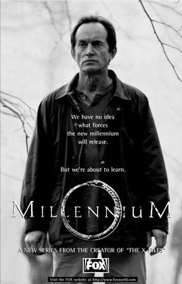

Millennium featured Frank Black, a freelance forensic profiler and former FBI agent with a unique ability to see the world through the eyes of serial killers and murderers, though he says that he is not psychic. Black worked for the mysterious Millennium Group, whose power and sinister agenda were explored throughout the series.
